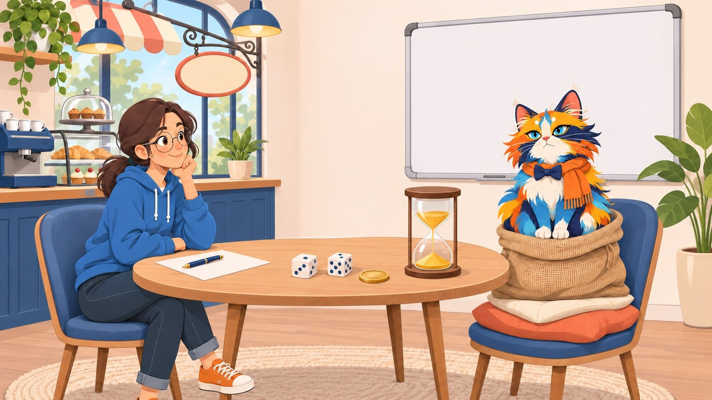
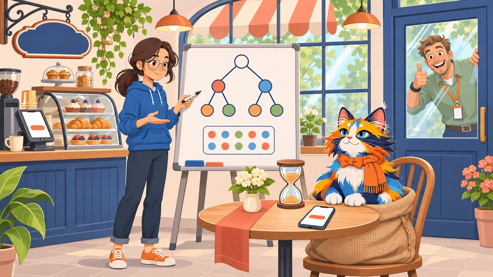
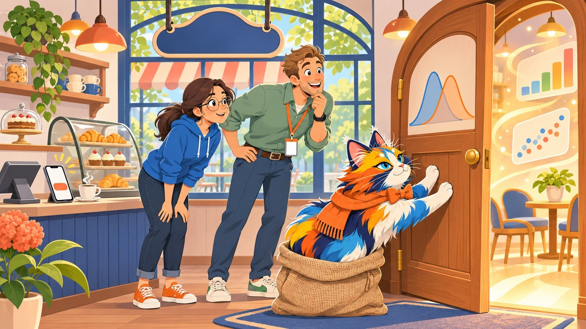

Шаг 9 из 9
Пробное собеседование
После шага ты сможешь решить 10 задач на время по схеме ответа и увидеть, какие шаги повторить и насколько точна твоя уверенность.

Алиса идёт на собеседование аналитиком. Напротив — Котейка в бабочке и с песочными часами. Монетки, кубики, касса, колесо призов — всё, что было в кафе, сейчас пригодится.

Десять задач. Перед каждым ответом скажи, насколько ты уверен: 50, 70 или 90%. В конце посмотрим, совпадает ли уверенность с точностью.
Как устроено
- Каждая задача — на отдельной карточке. Задачи новые, но каждая опирается на один из шагов 1–8.
- На задачу — около 3 минут. Таймер мягкий: когда время выйдет, можно решать дальше, он просто запишет время.
- Сначала выбери уверенность, потом ответ. Балл — за верный ответ с первой попытки.
- В конце — итог: баллы, время, калибровка и шаги, которые стоит повторить.
Ошибка здесь — не провал, а данные: задача, на которой ты споткнулся, лучше всего покажет, что повторить. Трудная попытка запоминается крепче лёгкой.
Идея из книги: Питер Браун, Генри Рёдигер, Марк Макдэниел, «Запомнить всё»
Как отвечать вслух
На собеседовании смотрят не только на число, но и на то, как ты к нему идёшь. Разберём вслух одну задачу.
Кубик бросили 10 раз. Какова вероятность, что ни разу не выпала единица?
- Переформулируй и назови допущения
Нужно, чтобы все 10 бросков были не единицей. Считаю кубик честным, а броски — независимыми.
- Посчитай в штуках
Из 6 серий в 5 первый бросок не единица. Из 1000 серий 10 бросков переживут примерно 162.
- Запиши формулу
Независимые броски — перемножаю: (5/6)¹⁰ ≈ 0.162.
- Проверь
Крайний случай: один бросок — 5/6, верно. Симуляция в коде даёт около 0.16.
- Скажи вывод одной фразой
Примерно 16%: в каждой шестой серии единица не выпадет ни разу.

Три одинаковых
Котейка бросает три кубика. Какова вероятность, что на всех трёх выпадет одно и то же число?
Сначала: насколько ты уверен, что ответишь верно?
Варианты ответа появятся, когда выберешь уверенность.
Твой ответ:
Переформулирую: исходов 6 · 6 · 6 = 216, подходят тройки 111, 222, …, 666. В штуках: 6 из 216. Формула: 6/216 = 1/36 ≈ 2.8%. Или так: первый кубик любой, второй и третий совпадают с ним — 1/6 · 1/6. Вывод: примерно один бросок из 36.
Девять решек из десяти
Котейка бросил монетку 10 раз: 9 решек и 1 орёл. Боб: «Орлов было мало — следующим точно будет орёл». Как часто бывает ровно 9 решек из 10 и какой шанс орла в одиннадцатом броске?
Сначала: насколько ты уверен, что ответишь верно?
Варианты ответа появятся, когда выберешь уверенность.
Твой ответ:
Переформулирую: сколько цепочек из 10 бросков с ровно одним орлом. В штуках: орёл может стоять на любом из 10 мест — 10 цепочек из 1024. Формула: C(10, 1)/2¹⁰ = 10/1024 ≈ 0.98%. Броски независимы, поэтому P(орёл в 11-м) = ½. Вывод: серия редкая, около 1%, но монетка не помнит прошлого — следующий орёл по-прежнему ½.
Две смены по четыре
Восемь бариста, среди них Алиса и Боб, случайно делят на две смены по четыре человека. Какова вероятность, что Алиса и Боб окажутся в одной смене?
Сначала: насколько ты уверен, что ответишь верно?
Варианты ответа появятся, когда выберешь уверенность.
Твой ответ:
Переформулирую: Алиса уже где-то стоит; где окажется Боб? В штуках: для Боба осталось 7 мест, из них 3 — в смене Алисы. Формула: 3/7 ≈ 43%. Проверка через сочетания: составов смены C(8, 4) = 70, с обоими в одной смене — 2 · C(6, 2) = 30, и 30/70 = 3/7. Вывод: чуть меньше половины, потому что место Алисы в её смене уже занято.
Автомат с игрой
У автомата с игрой в кафе три попытки. Каждая удачна с шансом 70%, попытки не зависят друг от друга. Какой шанс достать игру хотя бы раз?
Сначала: насколько ты уверен, что ответишь верно?
Варианты ответа появятся, когда выберешь уверенность.
Твой ответ:
Переформулирую: «хотя бы раз» — это «не все три неудачны». В штуках: из 1000 гостей первая попытка провалится у 300, вторая — у 90 из них, третья — у 27. Без игры уйдут 27, с игрой — 973. Формула: 1 − 0.3³ = 0.973. Вывод: 97.3%: «хотя бы один» — через «ни одного».
Хотя бы одна шестёрка
Бросили два кубика. Котейка подсмотрел и говорит: «Хотя бы на одном шестёрка». Какова вероятность, что шестёрки на обоих?
Сначала: насколько ты уверен, что ответишь верно?
Варианты ответа появятся, когда выберешь уверенность.
Твой ответ:
Переформулирую: условие «хотя бы одна шестёрка» сужает мир до части из 36 пар. В штуках: пар с шестёркой на первом — 6, на втором — 6, пара (6, 6) посчитана дважды: 6 + 6 − 1 = 11. Из них обе шестёрки — одна. Формула: P(обе | хотя бы одна) = (1/36)/(11/36) = 1/11 ≈ 9%. Вывод: 1/11 — меньше, чем 1/6, потому что подсказка не говорит, на каком кубике шестёрка.
Второй больше первого
Бросили два кубика по очереди, и на втором выпало больше, чем на первом. Какова вероятность, что на первом кубике больше трёх?
Сначала: насколько ты уверен, что ответишь верно?
Варианты ответа появятся, когда выберешь уверенность.
Твой ответ:
Переформулирую: сужаем мир до пар, где второй больше первого. В штуках: таких пар 15 (из 36 убрать 6 равных и поделить остаток пополам). Первый больше трёх: (4, 5), (4, 6), (5, 6) — три пары. Формула: 3/15 = 1/5 = 20%. Вывод: 1/5 вместо ½: условие «второй больше» делает маленькие значения первого кубика гораздо вероятнее.
Курьер в синей куртке
Вечером курьер задел самокатом машину и уехал. В районе 15% курьеров ходят в синих куртках, остальные — в зелёных. Свидетель говорит: «Куртка была синяя». В сумерках он правильно называет цвет в 80% случаев. Какова вероятность, что куртка правда синяя?
Сначала: насколько ты уверен, что ответишь верно?
Варианты ответа появятся, когда выберешь уверенность.
Твой ответ:
Переформулирую: среди всех случаев, когда свидетель говорит «синяя», какая доля — правда синие? В штуках: из 100 курьеров 15 синих, про 12 из них свидетель скажет «синяя». Из 85 зелёных он ошибётся про 17. Всего «синих» показаний 29, верных — 12. Формула: P(синяя | «синяя») = 0.15 · 0.8 / (0.15 · 0.8 + 0.85 · 0.2) = 0.12/0.29 ≈ 41%. Вывод: меньше половины: зелёных курьеров так много, что даже редкие ошибки свидетеля перевешивают. Сначала база, потом сигнал.
Связка ключей
У Боба связка из 5 похожих ключей, к подсобке подходит один. Сколько попыток в среднем нужно, если: а) пробовать ключи по очереди, не повторяясь; б) каждый раз брать случайный ключ из всей связки?
Сначала: насколько ты уверен, что ответишь верно?
Варианты ответа появятся, когда выберешь уверенность.
Твой ответ:
Переформулирую: а) номер нужного ключа в случайном порядке; б) номер первого успеха с шансом 1/5. В штуках: а) из 500 попыток открыть подсобку по 100 раз ключ найдётся на 1-й, 2-й, …, 5-й попытке — в среднем (1 + 2 + 3 + 4 + 5)/5 = 3. б) Это геометрическое распределение из шага 7. Формула: а) равномерное на 1…5, E = 3; б) P(X = k) = (4/5)k − 1 · 1/5, E = 1/p = 5. Вывод: без повторов — 3 попытки, с возвратом — 5.
До первого мальчика
В одной сказочной стране указ: каждая семья заводит детей, пока не родится мальчик, и на этом останавливается. Мальчик и девочка рождаются с шансом ½ каждый, независимо от старших детей. Какой будет доля мальчиков среди всех детей страны?
Сначала: насколько ты уверен, что ответишь верно?
Варианты ответа появятся, когда выберешь уверенность.
Твой ответ:
Переформулирую: сколько в среднем мальчиков и девочек в семье. В штуках: из 1000 семей первыми родятся ≈ 500 мальчиков и ≈ 500 девочек; 500 семей продолжают — ещё 250 и 250; дальше 125 и 125… Мальчиков ≈ 1000, девочек ≈ 1000. Формула: в семье ровно 1 мальчик; девочек — число неудач до первого успеха, в среднем 1/p − 1 = 1. Матожидания складываются, поэтому мальчиков и девочек в среднем поровну. Вывод: ½: правило остановки меняет размер семей, но не долю мальчиков — каждое рождение остаётся честной монеткой.
Рассеянный гость на банкете
На банкет в кафе пришли 100 гостей, у каждого — карточка с именем на своём месте. Первым входит Котейка: карточку он потерял и садится на случайное место. Каждый следующий садится на своё место, если оно свободно, а если занято — на случайное свободное. Какова вероятность, что последний гость сядет на своё место?
Сначала: насколько ты уверен, что ответишь верно?
Варианты ответа появятся, когда выберешь уверенность.
Твой ответ:
Переформулирую: к концу свободным останется либо место Котейки, либо место последнего гостя — все остальные места к тому времени займут их хозяева или вытесненные гости. Маленький пример: гостей двое — Котейка с шансом ½ садится на своё место, и тогда второй тоже на своём: ½. Для трёх гостей перебор вариантов тоже даёт ½. Симметрия: каждый, кто выбирает случайно, с равным шансом берёт место Котейки или место последнего; как только одно из них занято, судьба решена. Вывод: ½ при любом числе гостей от двух.
Не веришь? Проверь симуляцией: допиши цикл, где гости рассаживаются по правилам.
Что показало собеседование
Калибровка: совпадает ли уверенность с точностью
Калибровка: уверенность и доля верных ответов
| уверенность | задач | верно | доля верных |
|---|
Реши хотя бы одну задачу — здесь появится калибровка.
Что повторить
Ошибок пока нет — или задачи ещё не решены.
Баллы за первую попытку уже записаны и при повторе не меняются; калибровка и время посчитаются заново.
Идея из книги: Дэвид Шпигельхалтер, «The Art of Uncertainty»
Считай в штуках, отвечай одной фразой
- Схема ответа: переформулируй и назови допущения → посчитай в штуках → запиши формулу → проверь крайним случаем или симуляцией → скажи вывод одной фразой.
- Если завис: крайние случаи, маленький пример руками, «что я увижу, если повторить 1000 раз?».
- Калибровка: при уверенности 90% ты должен быть прав примерно в 9 задачах из 10. Мера Брайера — средний квадрат разницы между уверенностью и исходом.
Девять пословиц курса
- Подпиши монетки
- Короткая серия скачет, длинная успокаивается
- Не перечисляй — умножай
- «Хотя бы один» — через «ни одного»
- Условие сужает мир
- Сначала база, потом сигнал
- Одна монетка — случай, сто монеток — горка
- В среднем — не значит каждый раз
- Считай в штуках, отвечай одной фразой
Общую шпаргалку курса со всеми формулами соберём позже — в ней будут шпаргалки всех девяти шагов.
- Калибровка
- совпадение уверенности с долей верных ответов; calibration
- Мера Брайера
- средний квадрат разницы между прогнозом и исходом; Brier score

Или вернись к оглавлению «Вероятности на пальцах» и повтори шаги, на которых споткнулся.
Что дальше: «A/B без мифов» — скоро